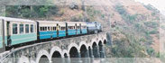

Accommodations
Facilities
Room Tarif
Special Packages


Shimla is the capital city of famous hill station Himachal Pradesh. Shimla is a splendid hill station located in the heart of the state of Himachal Pradesh, INDIA. With rolling hills and cascading waterfalls Shimla attracts a number of tourists from the destinations across the world. The visitors who frequently visit this city every year find Shimla endowed with remarkable beauty. It seems that the mountains welcome the visitors with its wide spread arms to come and take pleasure in the aura of heavenly bliss.
Here we brings you complete information on how to reach Shimla.
By Air
Jubbar Hatti Airport is the closest Airstrip Approx. 28 km from Shimla town by road. Jagsons, Indian Airlines & Air Deccan have regular flights from Delhi,Chandigarh, Kullu (Bhuntar) and Dharamshala (Gaggal).
Official websites of Airlines Fly to Shimla
» Air Deccan
» Kingfisher Airlines
By Road
Deluxe buses and many more buses leaves for to Shimla from all over the Northern India directly at all hours of the day and night. Drive on the National Highway 22 from Kalka to Shimla is soothingly refreshing. Chandigarh is 117 km, Manali is 219 km, Chail is 45 km and Delhi is at a distance of 370 km. From Delhi, the driving time is about eight hours. From Delhi, Manali and Chandigarh, Luxury/Volvo coaches and Taxies leaves for Shimla.
Official website of Himachal Road Transport Corporation for online Booking
» Ticket Booking Deccan

By Rail
Broad gauge rail Himalayan Queen and Howrah Express leave Delhi for Kalka every day. From Kalka One has a rare traveling delight in a toy like train on narrow gauge Leisurely spiraling through the green hills it touches Shimla after crossing 103 tunnels and many bridges. At so many places it runs parallel to the road. In addition to this there is an exclusive luxury coach for a group of six to eight persons journey in this coach and the railcar is an experience - 'Out of the world'.
Official website of Indian Railways
» Railways Ticket Booking